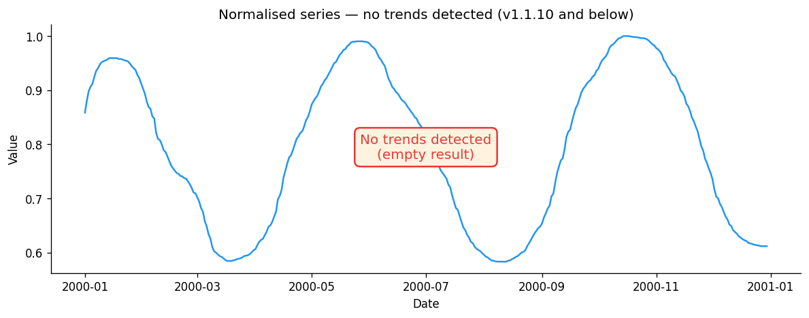
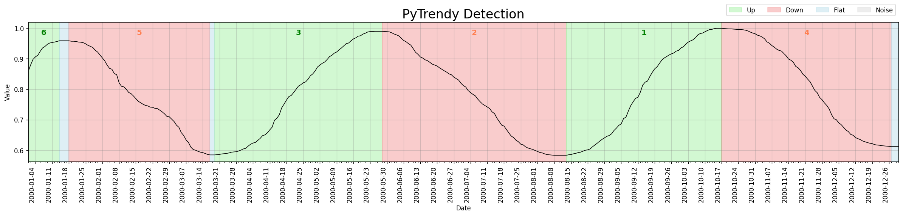
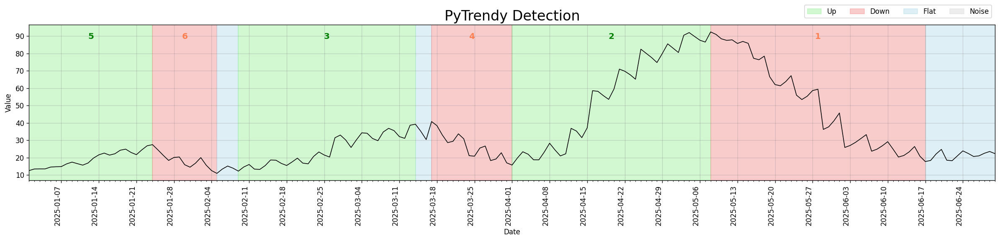

What's New
Stay up to date with every PyTrendy release — user-facing improvements, bug fixes, and behaviour changes.
Pre-release docs
You are viewing the develop (pre-release) build.
The section at the top reflects changes staged for the next stable release.
Switch to the main docs via the badge in the header to see only stable content.
Coming in v1.1.11 pre-release
Merged on the develop branch — will land in the next stable release.
Trend detection on normalised time series
detect_trends() previously failed to detect any trends when a series was scaled to the [0, 1] range (e.g., after min-max normalisation). The detection threshold was absolute, making it too large relative to the signal amplitude.
Before — v1.1.10

After — v1.1.11

The same normalised series now returns a correctly detected Up / Flat / Down sequence. See test_uncommon_values.py for the regression test.
??? example "Code"
import pandas as pd
from pytrendy import detect_trends
df = pd.read_csv("low_value_series.csv") # values in [0, 1]
result = detect_trends(df, date_col="date", value_col="trend")
print(result.df[["start", "end", "direction"]])
Metrics for all segment types
Segment metrics (change_rate, change_rank) were not computed for every trend type. All output rows now carry complete metric columns regardless of classification.
Released in v1.1.10
Released 2026-03-21
Automated tests for noise edge cases
Comprehensive automated tests were added for noise-related edge cases and crash scenarios, reaching full code coverage for the noise detection module. Artefact-cleaning helpers were refactored to be more testable.
Released in v1.1.9
Released 2026-02-07
Improved spike precision
Noise detection is now more precise for signals with a single dominant outlier spike surrounded by otherwise stable values.
Released in v1.1.8
Released 2025-11-15
Noise & flat detection improvements
| Area | What changed |
|---|---|
| Flat fill-in | Covers regions outside any detected segment range — no more visual white gaps |
| Flat fill-in | Skips zero-day leading/trailing regions; robust to grouped segments |
| Noise detection | Better precision for a spike on an otherwise flat-zero signal |
| Noise detection | Improved sensitivity when flat conversions emerge from noisy gradual trends |
| Noise detection | trend_too_flat is now treated as flat rather than noise |
| Noise detection | Up/down classification relies on the actual signal, reducing downstream artefact-cleaning needs |
Released in v1.1.7
Released 2025-11-01
Bug fixes
- Expand-contract: gradual trends can now be retroactively updated when a newer gradual changes the reference baseline.
- Noise detection: several edge cases around abrupt-noise boundaries, opposite-direction overlaps, and post-grouping checks resolved.
- Plot: visual displacement is only applied when it does not break the up/down direction contract.
Released in v1.1.0
Released 2025-10-15 — Minor version with new features and a major robustness overhaul
Flat fill-in
Gaps between classified segments are now automatically filled with a Flat segment, so the output always covers the full input time range without gaps.
Gradual trend detection

??? example "Code"
import pytrendy as pt
df = pt.load_data("series_synthetic")
result = pt.detect_trends(df, date_col="date", value_col="gradual")
print(result.df[["start", "end", "direction", "change_rank"]])
Abrupt trend detection

Improved results interface
segments_df = result.segments_df
summary_df = result.summary["df"]
segments_df = result.df # shorter alias
summary_df = result.df_summary # direct attribute
Core processing revamp
The signal processing and post-processing pipeline was extensively reworked (#8):
- More robust handling of edge cases across all trend types.
- Abrupt detection: better shaving, sub-segmentation, and direction-sensitivity.
- Gradual swallowing stretches flexibly across neighbouring segment adjustments.
- Touching consecutive abrupt segments are now correctly grouped.
Released in v1.0.x
August–September 2025 — initial release
PyTrendy launched with gradual, abrupt, and flat trend detection in a single call:
result.plot().??? example "Quick start"
from pytrendy import detect_trends, load_data
df = load_data("series_synthetic")
result = detect_trends(df, value_col="gradual", date_col="date")
result.plot()